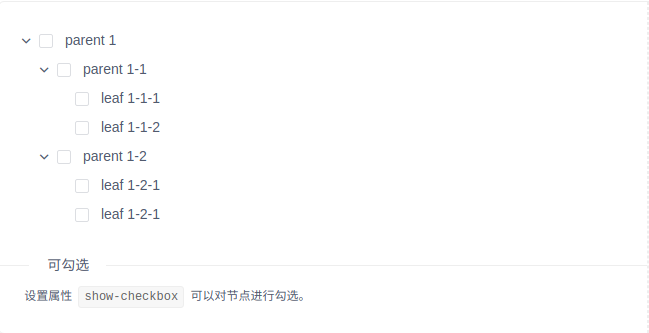
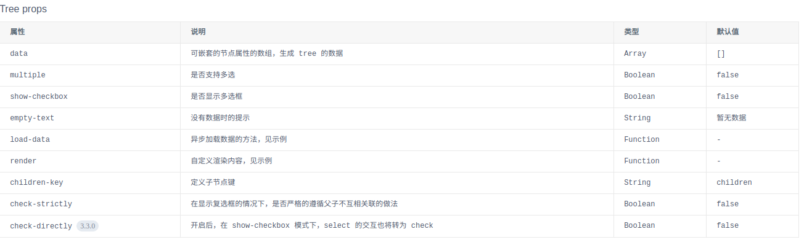
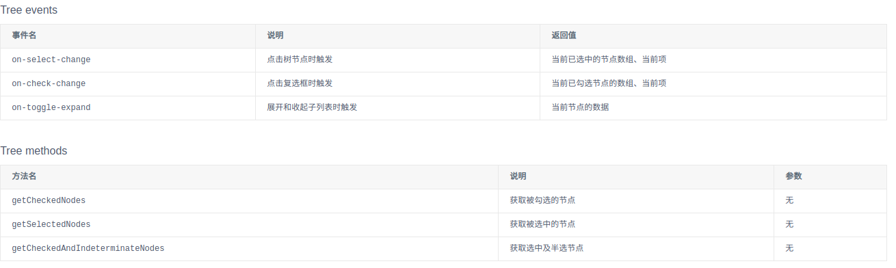
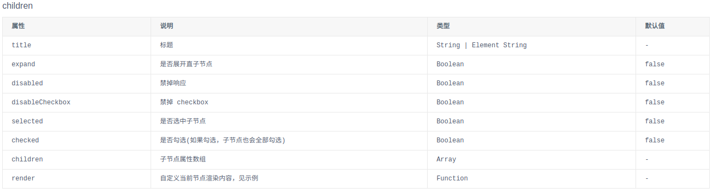
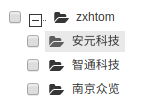

原文出处:本文由博客园博主烟花散尽13141提供。
原文连接:https://www.cnblogs.com/zhangxinhua/p/11375929.html
原文连接:https://www.cnblogs.com/zhangxinhua/p/11375929.html
Tree树形控件在前端开发中必不可少，对于数据的展示现在网站大都采取树形展示。因为大数据全部展示出来对于用户来说是不友好的。今天我们自己手写一个Tree插件。
iview提供的控件
- iview已经很成熟了，如果说我写的控件和iview提供的控件谁更好，那肯定是选择iview ， 手写控件只是为了更好的了解vue父子组件之间的通信的。 请读者还是不要拿我的控件和iview或者其他第三方的去对比。下面我们先来看看iview的Tree控件如何使用
<template>
<Tree :data="data2" show-checkbox></Tree>
</template>
<script>
export default {
data () {
return {
data2: [
{
title: 'parent 1',
expand: true,
children: [
{
title: 'parent 1-1',
expand: true,
children: [
{
title: 'leaf 1-1-1'
},
{
title: 'leaf 1-1-2'
}
]
},
{
title: 'parent 1-2',
expand: true,
children: [
{
title: 'leaf 1-2-1'
},
{
title: 'leaf 1-2-1'
}
]
}
]
}
]
}
}
}
</script>
- 上述的代码形成的效果如下

- 在使用Tree控件时在Template中还有如下树形可以使用(根据自己需求)

- 然后就是控件的一些事件捕获

- 子节点的一些设置

- 对于iview的Tree总结就是一句话：到位！。在这里小编也推荐大家使用iview来开发。这个框架对于后端程序员来说是个福利。因为我们不需要了解太专业的前端的只是就能够满足80%的需求了。
手写控件
同样的我们先来看看他的用法其实和iview一样。用我们封装好的模板就行了。下面是做一个部门树。部门下面挂着人员这个功能。
<zxhtree
v-if="userChange"
class="item"
treekey="deptId"
treename="deptName"
treechildren="children"
:model="deptData"
:ids="sysUserRole.deptIds"
:names="sysUserRole.deptNames"
@keyname="selectedUserObj"
>
</zxhtree>
js就是去填补上述的数据，比如deptData、sysUserRole这些。至于这些属性代表什么意思我们先不着急看。先上个效果图。

那么我们的zxhtree控件是在哪里注册的呢，这里被我们抽离在component.js里。Vue.component('zxhtree', {});
继续在zxhtree里看除绑定的节点是template: '#tree-template'。
tree-template的模板是在component.html中写好的
<script type="text/x-template" id="tree-template">
<div>
<tree-item
class="item"
:treekey="treekey"
v-for="(model, index) in model"
:treename="treename"
:treechildren="treechildren"
:model="model"
:ids="ids"
:names="names"
@keyname="selectedObj"
@data="synchdata"
>
</tree-item>
</div>
</script>
而在tree-template用到的tree-item控件才是真正的tree控件。这里是为了将树形包裹起来，所以才包裹了一层模板。
tree-item对应的模板代码是
<script type="text/x-template" id="item-template">
<ul class="ztree">
<li class="level0" @blur="blur" @focus="focus" tabindex="0" hidefocus="true" treenode="">
<input type="checkbox" :disabled="model.disabled" :ref="model[treename]" :checked="checkStatus" @click="selectedObj"/>
<span title="" @click="toggle" :class="openStatus" treenode_switch=""></span>
<a :class="selectClass" treenode_a="" onclick="" target="_blank" style="" :title="model[treename]">
<span title="" treenode_ico="" class="button ico_open" style=""></span>
<span @dblclick="toggle" class="node_name">{{model[treename]}}</span>
</a>
<tree-item
class="item"
v-show="open"
v-for="(model, index) in model[treechildren]"
:key="index"
:model="model"
:treekey="treekey"
:treename="treename"
:vistreekey="vistreekey"
:vistreename="vistreename"
:treechildren="treechildren"
ref="child"
@keyname="keyname"
>
</tree-item>
</li>
</ul>
</script>
可以很明显的看到这里我们使用了递归进行展示树形结构。因为树形结构你无法确定层级。所以在里面又使用了针对子节点的展示tree-item.
| 属性 | 含义 | 示例 |
|---|---|---|
| treekey | 内部树形展示 | deptId |
| vistreekey | 树形展示key | deptId |
| ids | 默认显示的数据 | 无 |
| names | 默认显示的数据 | 无 |
| treename | 内部真是展示数据 | deptName |
| vistreename | 树形展示数据 | deptName |
| treechildren | 当前树的子节点数据 | 无 |
| model | 当前树的数据 | 无 |
| (M)keyname | 用于接受返回的数据 | 无 |
手写控件扩展
控件接受数据处理逻辑
//接收到数据在外面套一层
if(this.model[this.treekey]==undefined){
this.treekey=this.vistreekey;
}
if(this.model[this.treename]==undefined){
this.treename=this.vistreename;
}
if (this.model.disabled == true) {
this.model.disabled = 'disabled';
}
console.log('组件注册了吗');
if ((','+this.ids+',').indexOf(','+this.model[this.treekey]+',') == -1) {
this.checkStatus = false;
this.model.checkStatus=this.checkStatus;
} else {
this.checkStatus=true;
this.model.checkStatus=this.checkStatus;
this.treekeys[this.model[this.treekey]]= this.checkStatus;
this.treenames[this.model[this.treename]]= this.checkStatus;
this.opt.key=this.treekeys;
this.opt['name']=this.treenames;
}
if(this.ids!=''){
var idarr = this.ids;
for(var index in idarr){
this.treekeys[idarr[index]]=true;
}
if (this.names.indexOf(",") == -1&&this.names!='') {
this.treenames[this.names]=true;
}else{
var namearr = this.names.split(",");
for(var index in namearr){
this.treenames[namearr[index]]=true;
}
}
}
渲染默认数据
var newOpt ={'key':{},'name':{}};
newOpt.key = Object.assign(this.opt.key, opt.key);
newOpt.name = Object.assign(this.opt.name, opt.name);
var flag=false;
for(var index in this.model[this.treechildren]){
if(newOpt.key[this.model[this.treechildren][index][this.treekey]]!=true){
flag=true;
}
}
if(!flag){
newOpt.key[this.model[this.treekey]]=true;
newOpt.name[this.model[this.treename]]=true;
this.checkStatus=true;
this.model.checkStatus=true;
}
for(var key in newOpt){
this.filterRealCheck(newOpt[key]);
}
this.opt=newOpt;
this.$emit('keyname', newOpt);
选择节点数据处理
if(selected instanceof MouseEvent){
this.checkStatus=!this.checkStatus;
}else{
this.checkStatus=selected;
}
this.model.checkStatus=this.checkStatus;
if (this.model.expected != true) {
this.treekeys[this.model[this.treekey]]= this.checkStatus;
this.treenames[this.model[this.treename]]= this.checkStatus;
this.opt.key=this.treekeys;
this.opt['name']=this.treenames;
}
for(var index in this.$refs.child){
this.$refs.child[index].selectedObj(this.checkStatus);
}
this.$emit('keyname', this.opt);
手写控件总结
因为笔者是侧重后端，所以前端知识不是很好，这个组件写的也是很乱。这个组件是之前临时写的。里面没有进行系统的梳理，上述的逻辑也是很乱。读者需要的可以选择下列加入战队(#addMe)联系我
需要源码的可关注下面公众号发点击进群后咨询。
# 加入战队
微信公众号
主题